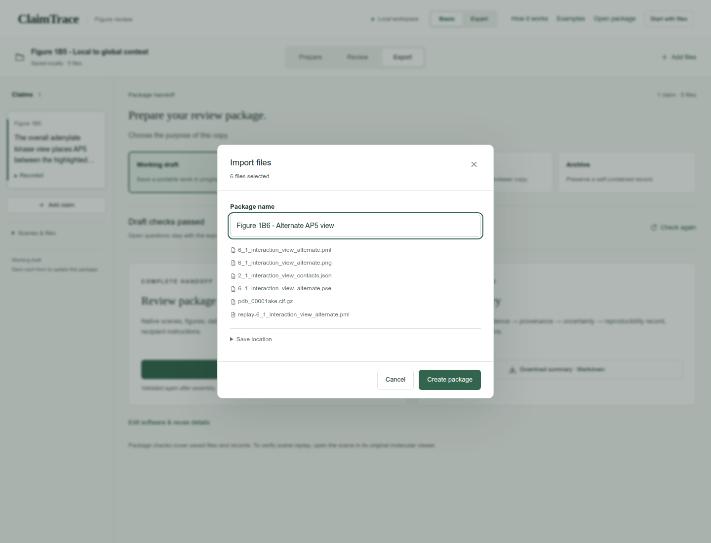
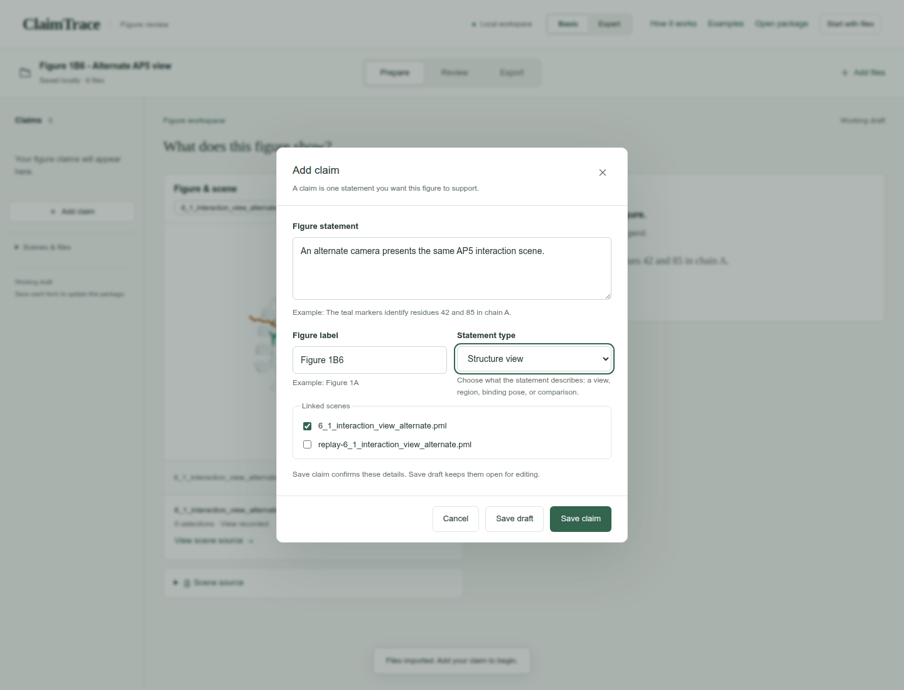
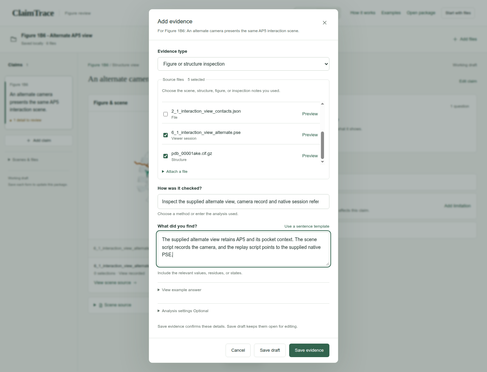
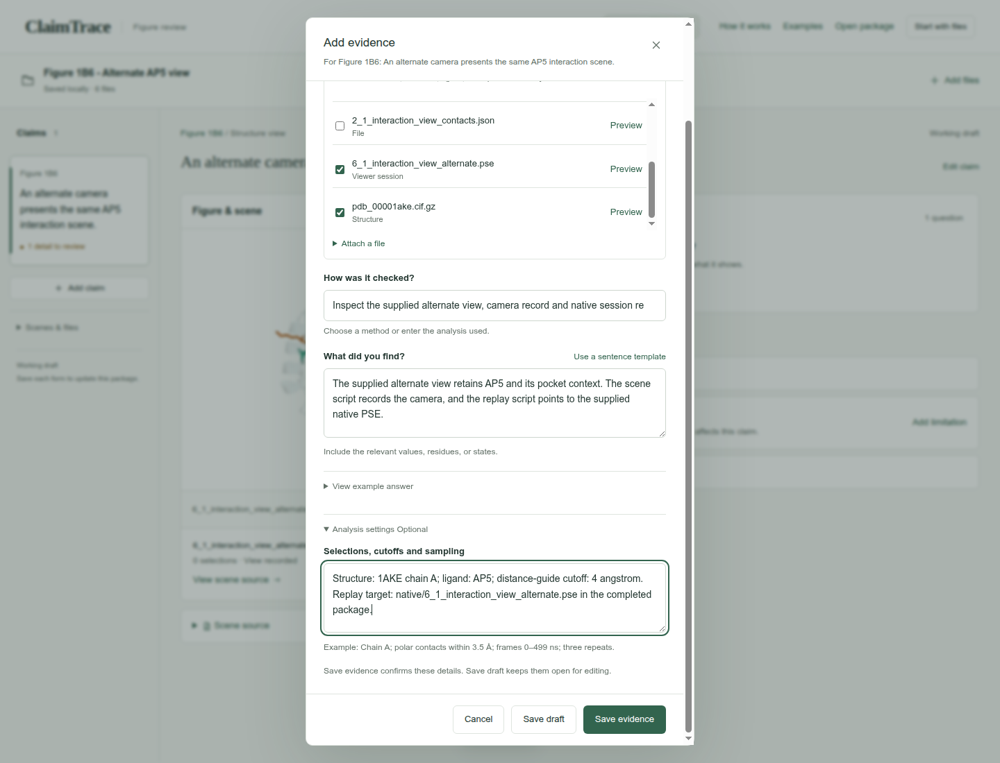
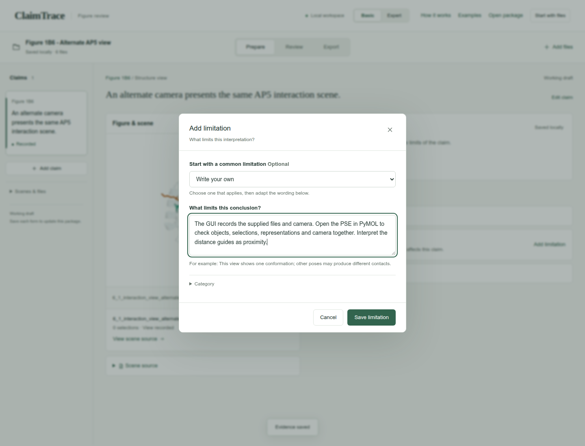
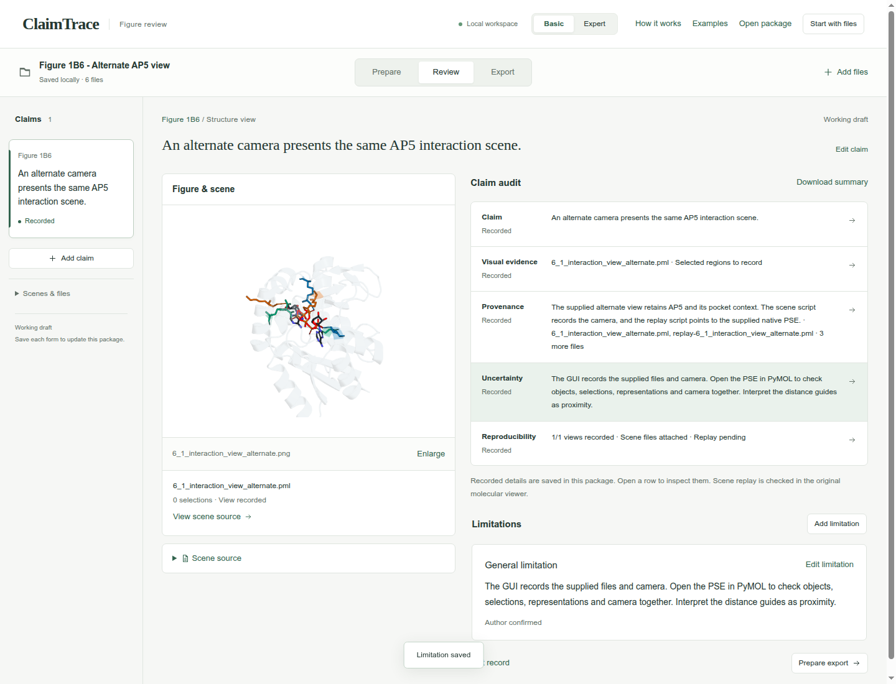
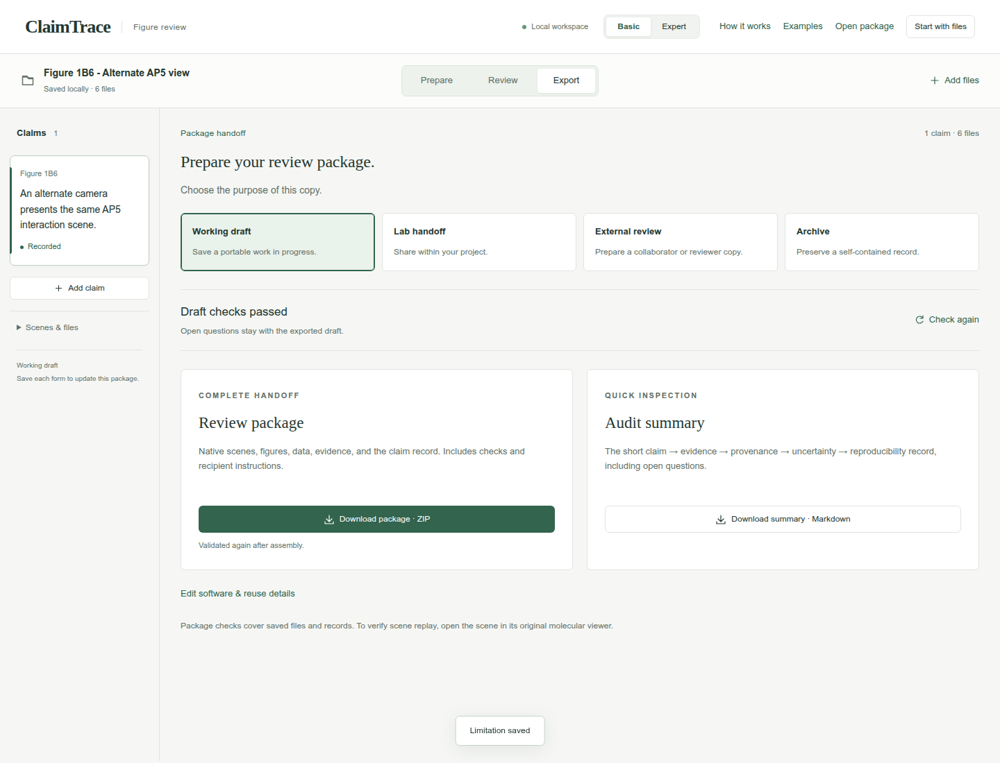
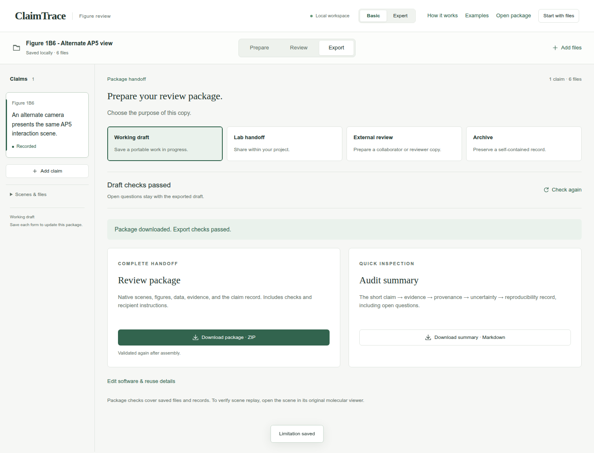

Browse the guide
Start hereAll 12 casesDescribe molecular views
Figure 1B1Pocket visibilityFigure 1B5Local to global contextFigure 1B6Preserve an alternate AP5 interaction viewCheck contacts and distances
Figure 1B2Contacts across viewsFigure 4ADocument conserved pocket-water selectionFigure 4CCheck short ligand contactsFigure 4DRecord an Asp110-ligand distanceCompare models and ensembles
Figure 1B3Confidence and geometryFigure 1B4AP5 conformational clustersFigure 4BCompare ranked ligand posesReview trajectories
Figure 4ETrace interaction state changesFigure 4FCompare trajectory repeatsShare and continue
Open a review packagePreserve an alternate AP5 interaction view
Link an alternate AP5 pocket view to its saved session and record what remains to check in PyMOL.
Extract the input ZIP first. The files folder contains the 6 files to select in ClaimTrace; LAB_NOTES.txt contains the example observations.
View the 6 input files
- 6_1_interaction_view_alternate.pml
- 6_1_interaction_view_alternate.png
- 2_1_interaction_view_contacts.json
- 6_1_interaction_view_alternate.pse
- pdb_00001ake.cif.gz
- replay-6_1_interaction_view_alternate.pml
- 1. Create the package
- 2. Write the figure statement
- 3. Choose the evidence and its sources
- 4. Record the settings
- 5. State the interpretation limit
- 6. Read the short audit
- 7. Prepare the working draft
- 8. Download the package
Create the package
Extract the input ZIP and read LAB_NOTES.txt beside the files/ folder. In ClaimTrace, click Choose files on the welcome page, or Start with files in an open package. Select all 6 files inside files/. Enter the package name below and click Create package.
| Package name | Figure 1B6 - Alternate AP5 view |
|---|
Check: The package opens with 6 files.

Write the figure statement
Click Add claim. Enter the statement and figure label. Keep 6_1_interaction_view_alternate.pml selected under Linked scenes. Click Save claim.
| Figure statement | An alternate camera presents the same AP5 interaction scene. |
|---|---|
| Figure label | Figure 1B6 |
| Statement type | Structure view |
| Linked scenes | 6_1_interaction_view_alternate.pml |
Check: The statement appears in the Claims sidebar.

Choose the evidence and its sources
Click Add evidence. Choose the evidence type and select the Source files listed below. Scroll within the file list to find each source. Enter the method and observation.
| Evidence type | Figure or structure inspection |
|---|---|
| Source files | 6_1_interaction_view_alternate.pml
replay-6_1_interaction_view_alternate.pml
6_1_interaction_view_alternate.png
6_1_interaction_view_alternate.pse
pdb_00001ake.cif.gz |
| How was it checked? | Inspect the supplied alternate view, camera record and native session reference. |
| What did you find? | The supplied alternate view retains AP5 and its pocket context. The scene script records the camera, and the replay script points to the supplied native PSE. |
Check: 5 source files are selected.

Record the settings
Expand Analysis settings and enter the recorded settings. Click Save evidence.
| Selections, cutoffs and sampling | Structure: 1AKE chain A; ligand: AP5; distance-guide cutoff: 4 angstrom. Replay target: native/6_1_interaction_view_alternate.pse in the completed package. |
|---|
Check: The page confirms Evidence saved, and Evidence & sources shows 1 record.

State the interpretation limit
Click Add limitation. Keep Write your own selected, enter the limitation, then click Save limitation.
| What limits this conclusion? | The GUI records the supplied files and camera. Open the PSE in PyMOL to check objects, selections, representations and camera together. Interpret the distance guides as proximity. |
|---|
Check: The saved limitation appears with the claim.

Read the short audit
Click Review. Read Claim, Visual evidence, Provenance, Uncertainty and Reproducibility. Click a row whenever you want to inspect its linked details.
Check: The audit shows the statement, source-linked finding, recorded limitation and current reproducibility status.

Prepare the working draft
Click Export, then Working draft. Read the package-check result.
| Purpose | Working draft |
|---|
Check: The page shows Draft checks passed.

Download the package
Click Download package · ZIP. Check your browser’s downloads for claimtrace-review.zip, then save it with your figure. The ZIP contains the source files, claim record and recipient instructions.
Check: The page confirms: Export checks passed. Your browser will download the package.

Your saved result
A downloaded Working draft ZIP with one claim, 6 input files, one evidence record and one limitation. The GUI confirms export checks passed.